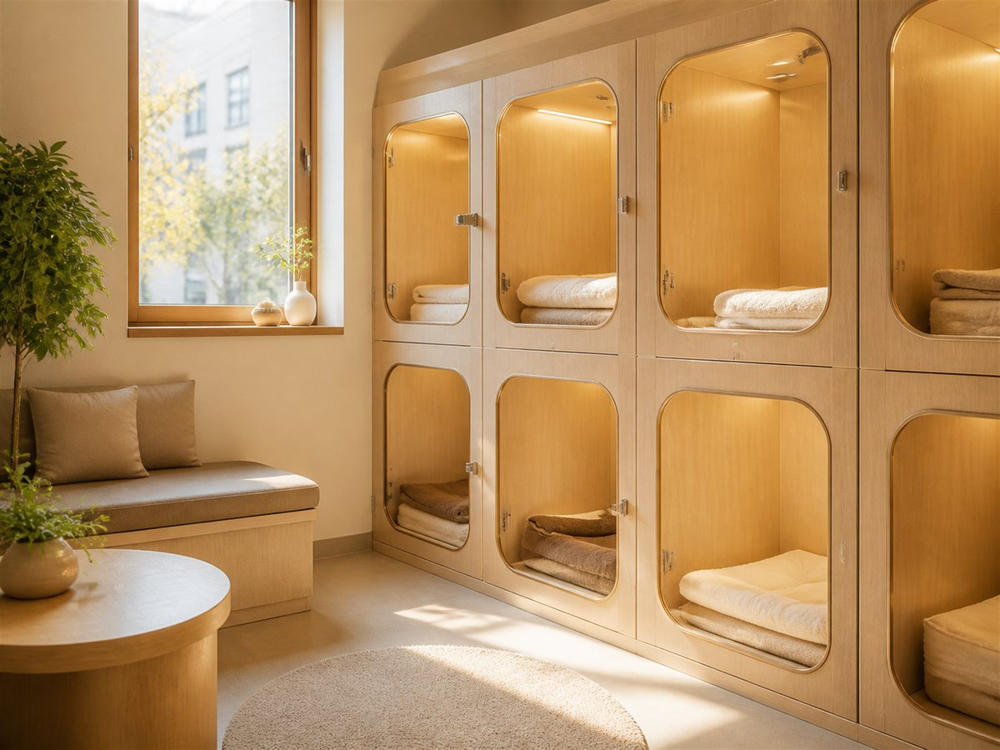

증상을 듣고 이동 중 응급처치를 안내합니다. 사진 · 영상 전송도 좋아요.
중증도 분류 후 응급 아이부터. 수납은 안정 후에 하셔도 됩니다.
처치 내용과 비용을 단계마다 보호자께 설명하고 진행합니다.
혈액 · 영상 종합 검진
슬개골 · 골절 수술
스케일링 · 발치
백내장 · 각막 질환
수의사 상주 · 산소실
24시 모니터링 입원장

촬영 즉시 판독 — 응급 상황에서 시간을 아낍니다.

주요 수치 15분 내 확인 · 외부 의뢰 없이 야간에도 검사.